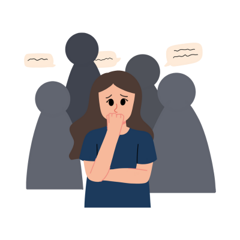

What is Social Anxiety Disorder?

Social Anxiety Disorder (SAD), also known as social phobia, is a common mental health condition characterized by intense fear and anxiety in social situations. People with SAD fear being judged, criticized, or embarrassed in social interactions, which can significantly affect their personal and professional lives.
This condition can cause extreme discomfort in social situations, leading to avoidance of public events or even basic interactions. However, with proper treatment, individuals with social anxiety can manage symptoms and improve their social functioning.
Symptoms of Social Anxiety Disorder
Common symptoms of social anxiety include:
- Intense fear of judgment: A strong fear of being negatively evaluated or embarrassed in social situations.
- Physical symptoms: Symptoms like rapid heart rate, sweating, shaking, dry mouth, or nausea when faced with social interactions.
- Avoidance of social situations: Individuals with SAD often avoid situations where they might be the center of attention, such as public speaking, parties, or meetings.
- Difficulty speaking: Fear of speaking in front of others, especially in groups, may cause individuals to stay silent even when they want to participate.
- Low self-esteem: People with SAD often struggle with feelings of inadequacy, believing that others will judge them harshly or that they are not capable of handling social situations.
The severity of symptoms can vary, and some individuals may experience symptoms in specific situations, while others may feel anxiety in all social interactions.
Causes of Social Anxiety Disorder
The exact cause of social anxiety disorder is not fully understood, but several factors may contribute to its development:
- Genetic factors: A family history of anxiety disorders or social anxiety may increase the risk of developing SAD.
- Brain chemistry: Imbalances in certain neurotransmitters or abnormal functioning in areas of the brain that regulate fear and anxiety may contribute to the disorder.
- Environmental factors: Childhood experiences, such as bullying, negative social interactions, or trauma, can increase the likelihood of developing social anxiety.
- Personality traits: People who are naturally shy, introverted, or have low self-esteem may be more prone to developing social anxiety.
Social anxiety disorder can develop in childhood or adolescence, and its impact may persist into adulthood if not addressed with treatment.
Treatment for Social Anxiety Disorder
Social anxiety disorder is treatable, and several effective treatment options are available:
- Cognitive Behavioral Therapy (CBT): CBT helps individuals identify and challenge negative thought patterns that contribute to social anxiety. It also involves gradual exposure to feared social situations to build confidence and coping skills.
- Exposure Therapy: Exposure therapy, a form of CBT, involves gradually facing social situations that trigger anxiety, starting with less challenging scenarios and progressively working up to more difficult situations.
- Medications: Certain medications, such as selective serotonin reuptake inhibitors (SSRIs) or benzodiazepines, may be prescribed to help manage symptoms of anxiety and fear.
- Social Skills Training: This approach focuses on improving communication and social interaction skills, helping individuals feel more comfortable in social situations.
- Group therapy: Group therapy offers a supportive environment where individuals with social anxiety can practice social interactions and gain confidence from others who share similar experiences.
With the right treatment plan, individuals with social anxiety disorder can overcome their fears and lead fulfilling, social lives.